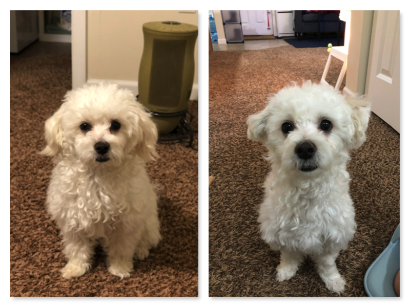
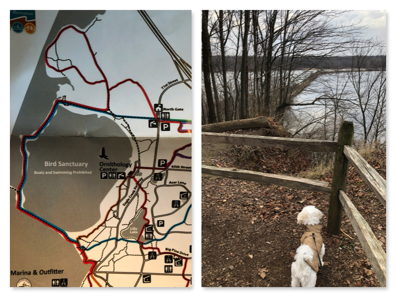
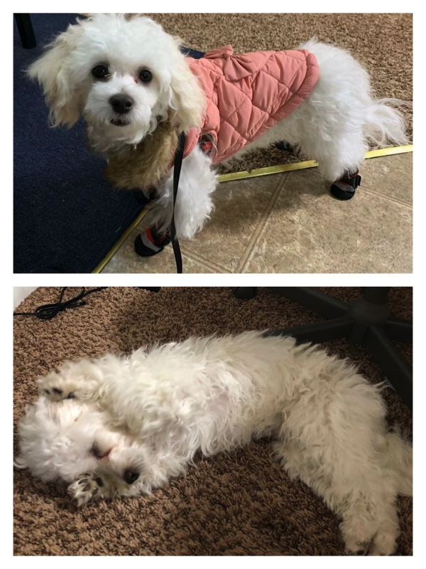

久违了诸位，实在对不住，跳票了几个月。剪毛后的滚滚今儿去了公园。
今天凌晨把这学期上的唯一一门课程的项目报告交掉后，学期可以算是正式结束了。收起患得患失的心态，滚滚终于能修剪他那长得没边的毛，还能出趟远门后去一小时之外的公园见见其他狗狗了。
如若您尚未得知，滚滚是我们养的狗狗，今年8月12日那天进的门。名字取的是「Yuan滚滚」的典故，作为一只马尔济斯+贵宾（Maltipoo），滚滚属于不咋掉毛的犬种，在可劲生长的蓬松毛发衬托下，他就是圆滚滚本滚。可惜外国人念不准——啊你们甘甘（Gungun）好可爱呀。。
滚滚他妈回国 check 去了，剪毛的事只能由我一手操办，最后果然不负所托，“剪秃了”。。简直是判若两狗。

当初8月滚滚刚来家里我们第一次给他剪毛时，一人揪住滚一人剪毛剪指甲，那时候滚滚还没有像现在这么信任我们，在屋后头草坪架起的熨衣板上死命挣扎；而现在就乖乖地躺在地毯任君摆布。
我也是初试剪刀，方式简单粗暴，揪起一撮毛，把看着过长的部分都剪去，全身大致一个长度，在发型上这可能属于圆头。因为没有统一标尺，不同区域的毛发容易引发恶性竞争，这儿剪短之后隔壁可能就又显得长，诶隔壁咋又得剪了，循环往复。
剪了毛的滚滚驱车前往 Eagle Creek Park。公园在 Indy 的西北角，一个小时车程。公园挺大，风景也不错，可惜买过的 state park 年票不能用，售票员说他们是 city park，不受州里的财政资助呢，但一辆车也只是5刀。
随手从下图中心的区域开始走，走了一个环回到起点也就一个小时上下。风景不错，有山有水还有栖息的群鸟，下图远处的长堤就是路线的一部分。

最后是滚滚妈怀念一下剪毛前的滚，天冷了，大家注意添衣服。
